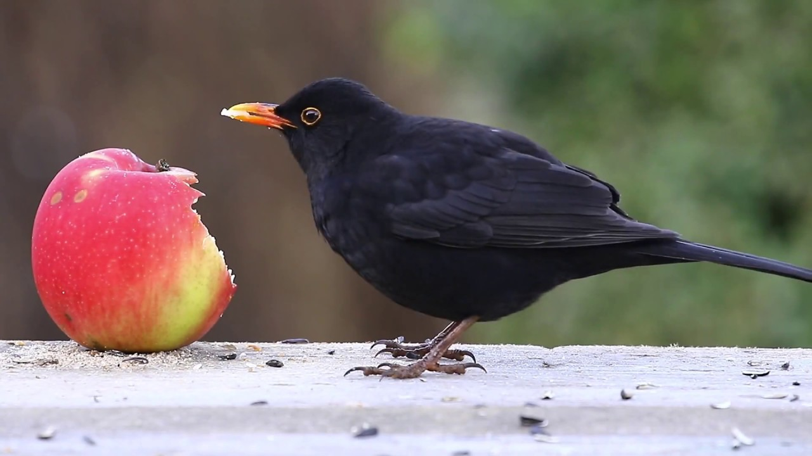
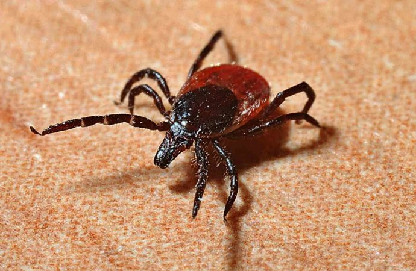

Életmód és viselkedése
|
Bogarakat és azok lárváit, pattanóbogarakat, cserebogarakat, lószúnyogokat és gilisztákat zsákmányolnak, de nagyon szeretik a gyümölcsöket is. Egy részük állandó, más részük a Földközi-tenger nagy szigetein és Olaszországban tölti a telet.
A hím fekete rigó védelmezi a fészkelőhelyet, elkergetve a többi hímet a környékről a meghajlás és futás fenyegetés mutatásának alkalmazásával. Ez egy rövidebb futást takar, ahol a fej fel van emelve, majd a farkával tompítja meghajlását. Ha párharcra kerül sor a hímek között, akkor az általában csak rövid ideig tart és többnyire a támadó gyors elkergetésével jár. Tavasszal a tojók is igen agresszív viselkedésűek, amikor a többi tojóval az értékesebb fészkelőhelyekért folyik a verseny. A tojók közt is előfordul párharc, amely kevésbé gyakori, ám annál hevesebb.
A csőr külleme fontos a fekete rigók közti párbeszédek során. A területét védelmező hím egyed jóval agresszívebb viselkedést mutat élénk narancssárga csőrével, míg egy első éves hím csőre sárgás, amely a fiatalok egyik jellemzője. A tojó nem mutat különbséget csőr tekintetében a hímtől, ám fényesebb csőre van, Ameddig megfelelő mennyiségű téli eledelhez van hozzáférése a madaraknak, addig mind a hím, mind pedig a tojó a területükön maradnak akár egész évben is, ahelyett, hogy más területeket vennének birtokba. A költöző egyedek társaságkedvelők és kisebb csapatokban vonulnak és kisebb, laza csoportokban vándorolnak a telelőterületeken. Vándorlás közben a költöző egyedek előbb gyors szárnycsapásokkal haladnak előre, majd vitorlázva csökkentik a repülési magasságot, ami eltér e faj gyors repülési módjától, és a többi nagyobb testű rigóféléétől.
|

|
A csésze formájú fészek fűszálakból, levelekből, vagy egyéb növényi részekből áll, melyet sárral tapasztanak össze. A fészek építésében kizárólag a nőstény vesz részt. A tojó 3-5, (általában négy) kékeszöld, barnáspiros pettyekkel díszített tojást tojást rak, amely a tojásdad alakjának kiszélesedő részén nehezebb. A tojás 7,2 gramm súlyú, melynek mintegy 6 százalékát teszi ki a héj. Az európai és az északabbi fajok tojásainál az indiai szubkontinensen élő egyedek tojásai halványabb árnyalatúak.
A tojó 12-14 napig kotlik, mielőtt a fiókák vakon és csupaszan kikelnek. A fiókák kirepüléséhez további 10-19 napnak kell eltelnie (átlagosan 13,6 nap), miközben mindkét szülő táplálja a kicsinyeket és eltávolítják az ürüléket a fészekből. A fészkek gyakran rosszul rejtettek más madárfajokhoz viszonyítva, ezért számos alkalommal (89 százalékban) a fészekrakás eredményét a ragadozók teszik tönkre. A fiatalokat a szülők még további három hétig etetik, miután elhagyták a fészket és elkezdik a fiókák a szülőket követni az élelem után való kutatásban. Ha a tojó új fészekaljat hoz létre, akkor a hím folytatja a kirepült fiókák etetését és a táplálékszerzésre való tanítását.
A másodszori költés elég gyakori és gyakran a korábban már használt fészekben költi ki új fészekalját. A harmadszori költés gyakorisága annál nagyobb, minél délebbi területen vizsgáljuk a fekete rigók életterét.
Egy átlagos feketerigó mintegy 2,4 év várható élettartammal bír, valamint a madarak gyűrűzéséből tudjuk, hogy a legidősebb eddig élt példány 21 évet és 10 hónapot élt meg.
Szaporodása
|
Ágvillába, bokorra, tüskés cserjére építi gallyakból, fűszálakból álló, sárral összetapasztott, mély, csésze alakú fészkét. A hímek februárban foglalják el territóriumukat. A hím énekével csalogatja a tojókat, az idegen hímeket elüldözi. A 4–5 tojáson, amelyek halványzöldesek, halvány rozsdás és ibolyás színű pöttyökkel, 14 napig kotlik a tojó. Két hét után a fiókák kiugrálnak a fészekből, a pár még két hétig eteti őket, majd új fészekaljba kezdenek.
A hím fekete rigó fejét le-fel hajtva futkározva jelzi a tojónak párosodási szándékát, nyitott csőrrel és fojtott énekkel. A tojó mindaddig mozdulatlan marad, amíg fel nem szegi fejét és meg nem emeli farktollait, jelezvén, hogy készen áll a párosodásra. Ezen madárfaj monogám tipus, ezért párjuk mellett általában életük végéig kitartanak. A párok különválási aránya húsz százalék fölötti, mely a gyenge megtermékenyítés után szokott bekövetkezni. Jóllehet monogám párkapcsolatban él a legtöbb fekete rigó, ugyanakkor kutatások bebizonyították, hogy 17 százalékra tehető az extra apaság, azaz a hím egyedek mintegy 17 százalékban sikerrel párosodnak más nőstényekkel is a párjukon kívül.
A fekete rigó márciusban kezd el szaporodni, ám a keletebbi és az indiai szubkontinensen élő fajtársai ennél akár egy, vagy több hónappal is később kezdenek el párosodni. Új-Zélandon a fekete rigók augusztusban kezdenek el költeni. A fekete rigó pár a megfelelő fészekrakóhelyet bokrok, kúszónövények szövevényében találja meg, előnyben részesítve a tüskés, vagy örökzöld bokrokat, mint például a borostyán, a magyal, a lonc és a galagonya. A rigók időnként fészerekben, csűrökben, vagy egyéb ember által épített melléképületekben fészkelnek.
|

|
Éneke és hívójelei
Az elsőéves hím fekete rigó, amelyik már ivarérett és ezért részt vesz a párosodás jogáért folytatott versenyben, kedvező időjárás esetén már január végén elkezdi éneklését, hogy ezáltal is kijelölhesse felségterületét, melyeket március végén az idősebb hímek éneklése követ. A hímek dala változatos és dallamos, kissé hajlított trillázás, melyeket fák tetején, tetők ormain, vagy magasabban fekvő pontokon állva ad elő, elsősorban a márciustól júniusig tartó időszakban, néha július elejéig. Számos egyéb hívójel is ismert a fekete rigóknál, ide értve a "szííí" és a "púk-púk-púk" figyelmeztetést, amelyet a területre belépő földön járó ragadozók (például macskák) megpillantásakor hallat, valamint a különféle "csink" és "csúk-csúk" hangelemek. A területét védelmező hím változatlan formában adja a "szink-szink" hangjeleit esténként (általában sikertelenül), hogy elzavarja a többi hímet és megakadályozza ezáltal, hogy az ő területén kezdjenek el énekelni. Akárcsak más énekesmadarak, a fekete rigó is magas "szííí" hangot hallat, ha ragadozómadarak bukkannak fel és a hangot gyorsan változtatja, ezzel is megnehezítve annak forrásának megtalálását a növényzetben.
Természetes ellenségei és élősködői
|
Az ember közeli környezetben a fekete rigók legnagyobb természetes ellenségei a házi macskák, amelyek leginkább a frissen kikelt fiókákat veszélyeztetik, melyek igen sérülékenyek ebben a korban. A rókák, valamint a ragadozó madarak, mint például a karvalyok, valamint az Accipiter nemzetségbe tartozó többi ragadozó madár szintén elejtik a rigókat, amikor alkalmuk nyílik rá. Habár csak nagyon kevés bizonyíték van arra vonatkozóan, hogy a fekete rigók létszámát csökkentenék, vagy tojásaikat elfogyasztanák, ám a varjúfélék, mint például a szarkák és a szajkók hatással vannak a fekete rigók egyedszámára.
E madárfaj esetenként az élősködő kakukkfélék áldozatává válik, és a kakukk felnevelteti vele fiókáit, ám ez csak elenyésző esetekben fordul elő, mivel a rigók felismerik a kakukkok felnőtt egyedeit, és képesek felismerni a nem odaillő tojásokat. Az Egyesült Királyságban 59 770 rigófészket vizsgáltak meg, és mindösszesen háromban volt kakukktojás, amely mindössze 0,005 százaléka a vizsgált fészkeknek. Az Új-Zélandra behurcolt fekete rigók, amelyek már közel 130 éve nem találkoztak kakukkokkal, mivel az nem él a szigetországban, elvesztették a kakukkokat felismerő képességüket, ám továbbra is felismerik a fészekbe nem illő tojásokat.
A többi énekesmadárnál is általánosan előfordulnak élősködők, így a fekete rigó állományát is érintik. A fekete rigók 88 százalékánál található valamilyen élősködő, elsősorban a testükben, mint például az Isospora és a Capillaria. A rigók több mint 80 százaléka fertőzött valamilyen vérben előforduló parazitával, mint amilyen például a Leucocytozoon, a Plasmodium, a Haemoproteus és a Trypanosoma fajok.
|

|
|
A fekete rigók életük jelentős részét a földön töltik élelem után kutatva, ahol kullancsokkal fertőződhetnek, melyek külső élősködők, és főleg a rigók fejéhez tapadnak hozzá. Franciaországban a vidéken élő fekete rigók 74 százaléka volt megfertőzve a kullancsok Ixodes fajával, miközben a városi populációnak csak mintegy 2 százalékát érintette ugyanez a probléma. Ez részben azért van így, mert a kullancsok számára jóval nehezebb a rendszeresen nyírt gyepterületeken és a művelt kertekben újabb és újabb hordozó állatokat találniuk, mint a gondozatlan vidéki környezetben, valamint azért is, mert a kullancsokat hordozó őzek, rókák és vaddisznók jóval nagyobb számban élnek vidéken. A kullancsok Ixodes faja képes átvinni a különböző kórokozókat, vírusokat és baktériumokat az egyik állatról a másikra, és, mint ismeretes, képesek a Borrelia baktériumot a madarakra átvinni, ugyanakkor ez nem jelenti azt, hogy ez nagyban befolyásolná a fekete rigók fizikai állapotát, kivéve, ha legyengült a szervezetük, vagy éppen vándorlás utáni időszakban vannak. A fekete rigó az egyik olyan ismert állatfaj, amely képes félig éberen aludni. Ilyenkor az agyuk egyik féltekéje gyakorlatilag pihen, miközben elektroenkefalográfiai eszközökkel kimutatható, hogy a másik agyfél éber marad. Ennek az a haszna a rigók számára, hogy olyan helyeken is képes nyugodtan és biztonságban aludni, ahol magas a ragadozók száma, vagy vándorlás során, miközben éberen figyel környezetére.
|

|
Védettsége
Magyarországon védett, természetvédelmi értéke 25 000 Ft. Napjainkban nem ismertek egyedszámát drasztikusan csökkentő tényezők.
A fekete rigónak viszonylag nagy kiterjedésű élőhelye van, amely mintegy 10 millió négyzetkilométert foglal magába. Egyedeinek számát csak az európai kontinensen mintegy 79 és 160 millió példány közé teszik a szakemberek. Ennélfogva a kevésbé veszélyeztetett fajok közt szerepel az úgy nevezett Vörös listán, amely a veszélyeztetett állatfajokat sorolja fel. Néhány kisebb helyi populációjától eltekintve a fekete rigó állománya folyamatosan növekszik. Azokon a területeken, ahol a mezőgazdasági területek térhódítása miatt eltűnnek a bokorsorok és sövények, valamint ahol túlzott mértékben használnak rovarölő szereket, ott csökken a számuk, hiszen mind az életterüket, fészkelőhelyeiket, mind pedig a táplálékukat elveszítik.
A fekete rigót 1857-ben hurcolták be Ausztráliába, ahol széles körben elterjedtté vált, és napjainkban már a Bass-szoros szigetein és Tasmaniában is élnek példányai. Ugyanakkor e madár az ausztrál kontinensen kártevőnek minősül, mivel megcsipkedi a puhább héjjal bíró gyümölcsöket, elsősorban a cseresznyét, szőlőt és más bogyós gyümölcsöket. A fekete rigó ezen felül kiszorítja az őshonos madárfajokat eredeti élőhelyükről, és elveszi azok fészkelőhelyeit is.
A fekete rigó az ezüstös pápaszemesmadárral karöltve a legelterjedtebb behurcolt madárfajok Új-Zélandon. Az énekes rigóval együtt került a szigetországba 1862-ben, és országszerte elterjedt fajjá vált az 1500 méteres tengerszint feletti magasság alatti régiókban, akárcsak a közeli Campbell-sziget és Kermadec-szigetek területén. Számos őshonos és egzotikus gyümölcsöt fogyaszt, és elég nagy szerepet játszik az erdők fafajainak terjesztésében is.